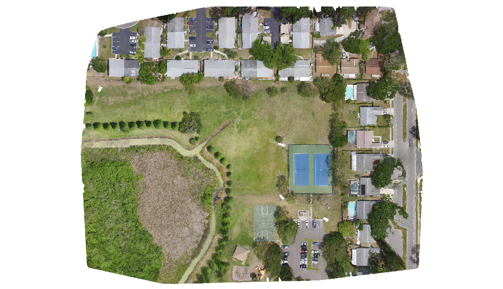
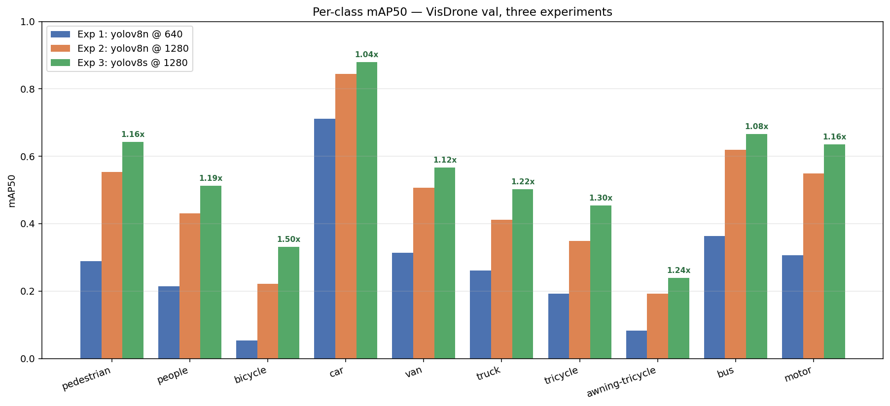
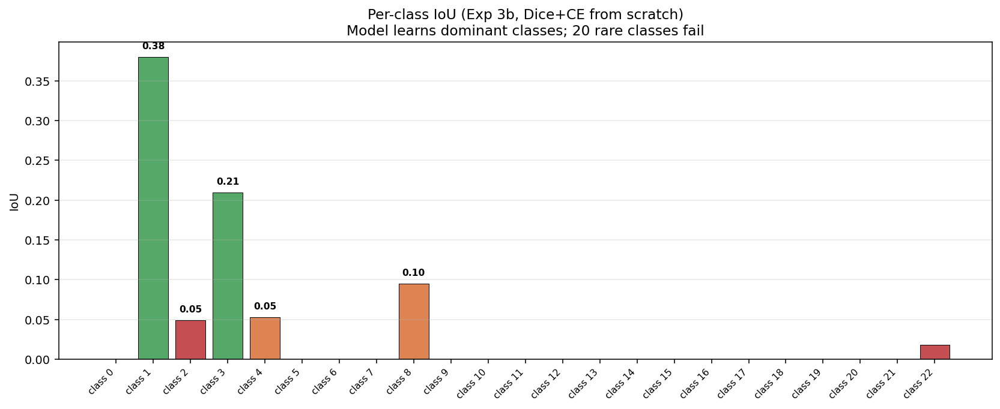

Mark David Mapalo Mwila
I build end-to-end geospatial pipelines that convert raw drone imagery into professional, AI-analyzed maps. From photogrammetry to deep learning segmentation, I bridge the gap between data collection and actionable intelligence.

Project 4: End-to-End Mapping Pipeline
Processed 172 drone images using OpenDroneMap to generate a 2.6 cm/px orthomosaic. Built a PyTorch pipeline to run AI segmentation on the massive GeoTIFF using tiled inference, and exported a client-ready GIS layout via QGIS.
View Project
Project 2: VisDrone Object Detection
Trained YOLOv8 models on aerial drone imagery. Conducted a rigorous ablation study proving that input resolution is the dominant lever for detecting tiny objects compared to model capacity.
View Project
Project 3: Semantic Segmentation
Trained U-Net architectures from scratch and with pretrained encoders. Diagnosed severe class imbalance issues, proving that data distribution—not model architecture—was the bottleneck.
View ProjectProject 1: EuroSAT Classification
Trained CNNs on Sentinel-2 satellite imagery. Explored transfer learning and data augmentation, achieving 97.8% accuracy on land-use classification.
View ProjectLet's build something.
Available for drone data processing, GIS mapping, and custom AI pipelines.
Email: markdmm647@gmail.com
GitHub: github.com/kram-divad